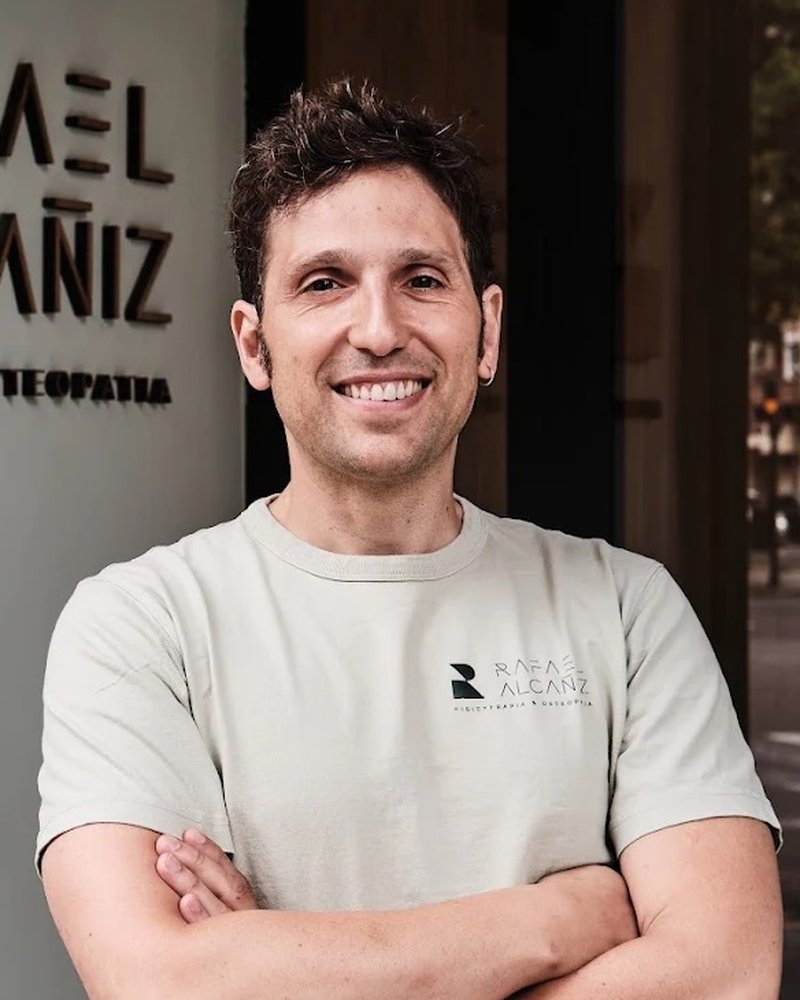

Salud física · Fisioterapia
Rafael Alcañiz
Fisioterapeuta y osteópata
Lleva más de 20 años tratando dolor de espalda, cervicales y lesiones deportivas en su consulta de Campanar, en València. Entiende el cuerpo como un todo y busca el origen del dolor, no solo calmarlo. En Kalokai enseña a los equipos a prevenir molestias y a cuidar su cuerpo en el día a día.
rafafisio.com